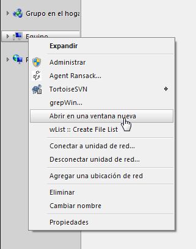
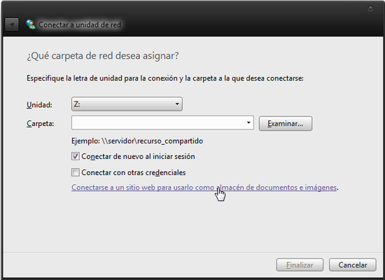
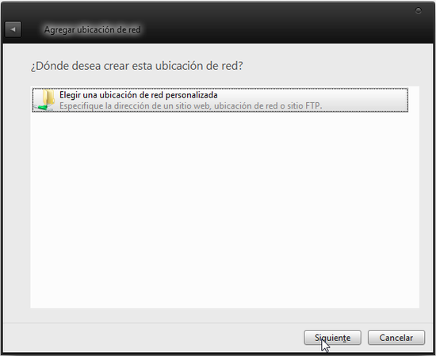
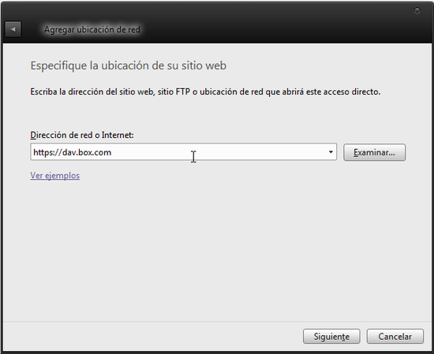
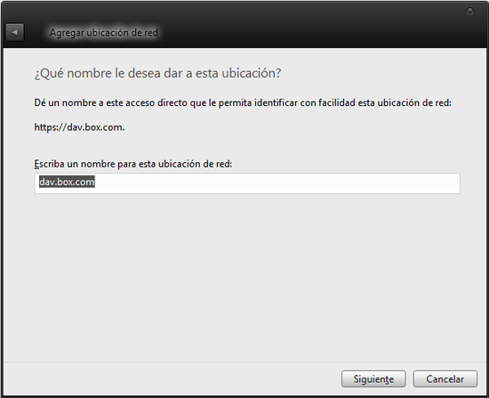
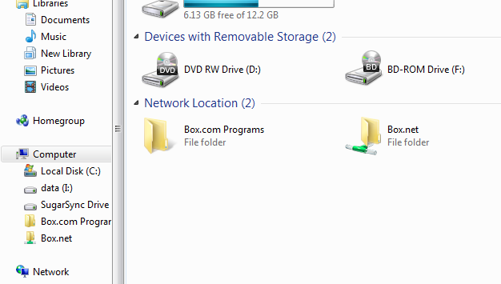
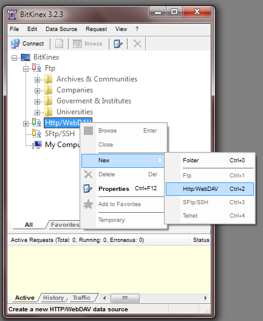
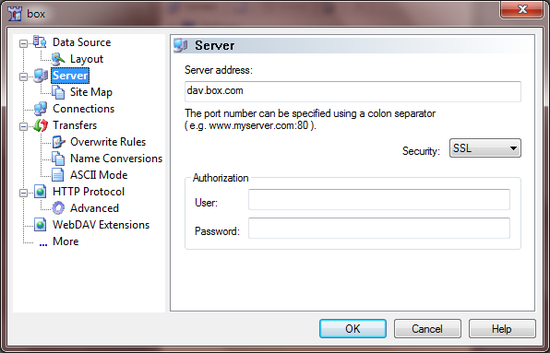
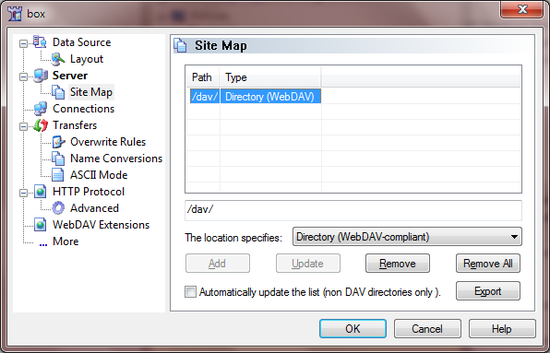
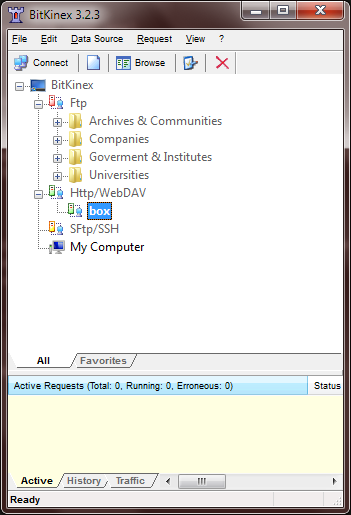

Box: acceder por WebDAV
Acceder por WebDAV a servicios de sincronización para verlos en tu explorador de archivos sin tener que instalar el cliente -> esperar a que inicie -> indexe -> haga la sincronización solo para sacar un archivo1, es priceless2.
Me aventuré con esto por que quería hacer un proyecto donde necesitaba un FTP. Ultimamente (o siempre fue así), no te dan la opción de hacerte cuenta de FTP, solo creando un sitio. Not interested. No tengo un server/computadora (es un pendiente) para hacerla server e instalarle FileZilla. Damnit. Me acordé de los servicios de sincronización/host de donde tengo cuenta y me aventuré.
Elegí Box. Pensaba subir los archivos por web, ya que la sincronización es media-media en ese servicio, pero recordé que SugarSync tiene el "SugarSync Drive", donde podes acceder a tu cuenta con el explorador de archivos. Me puse a buscar si Box tenía la mismo o similar.
Tiene para acceder por FTP, pero solo en cuentas pagas. Después leí sobre WebDAV. Intenté configurarlo y, luego de pelear por bastante tiempo, acá está cómo hacerlo en Windows (7).
Windows Explorer
En "Equipo" (el viejo "Mi PC"), ir a Conectar a unidad de red

Seleccionar el disco (que no importa mucho parece), tildar Conectar de nuevo al iniciar sesión. Clickear en Conectarse a sitio web para usarlo como almacén...

En la ventana que aparece, seleccionar Elegir una ubicación de red personalizada

Ahora lo divertido y lo que me dió dolores de cabeza: la dirección.

Se puede poner:
- Para toda la carpeta/cuenta:
https://dav.box.com - Para carpeta especifica:
https://dav.box.com/dav/CARPETITA
Sale la ventana de log in. Poner nombre de usuario/e-mail de Box y la contraseña.
Opcional, en la siguiente pantalla renombrar ahora la etiqueta:

Y listo, asi queda:

Si no te funciona, podes usar CarotDAV (que es para "unir" varios servicios en un mismo programa portable), el famoso Total Commander o BitKinex.
BitKinex
Descargar BitKinex. Instalar normalmente, pero recomiendo (por que leí) destildar el "I want to configure data source now" por que parece que no hace nada).
Una vez iniciado (si, aparece asi chiquito por alguna razón), buscar en la lista el Http/WebDAV, right click > New > Http/WebDAV e ingresar nombre.

Poner datos similares de los de arriba: dav.box.com, seleccionar SSL. Poner usuario y contraseña en el apartado de abajo:

También lei (opcional) que se puede poner un path al Site map (no se para qué, no noté diferencia). Se configura yendo a Site Map (debajo de donde estas ahora/Server) y agregando/modificando el path con /dav, eligiendo Directory WebDAV-compliant

Y listo, solo falta hacerle doble click a la conexión y tenes los datos:

Fuente: Box zendesk